Mock 1 · Authentic Written Exam Paper
Complete transcription of Prof. Dr. Jörg Schäfer's 11-page genuine written examination paper (exam-questions.pdf). Contains all 8 official Exercises covering 107 total points with genuine photo scans, model solutions, and grading keys.
Part 1 · Core Written Questions (From Page 1)
15 Points TotalQuestions 6, 7, and 8 directly transcribed from the printed sheet.
📷 Original Exam Sheet Scan · Page 1 Click to inspect original paper
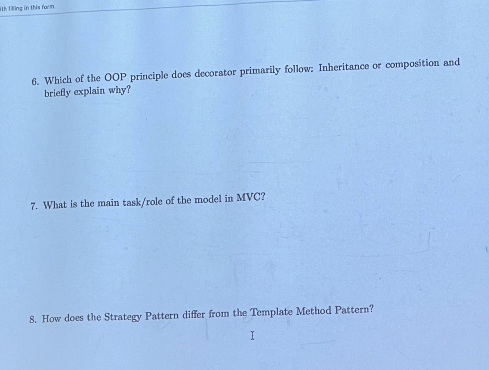
Which of the OOP principles does decorator primarily follow: Inheritance or composition and briefly explain why?
Official Solution & Rubric Model Answer
Primary Principle: Composition (Object Composition over Class Inheritance)
- Composition Provides Dynamic Behavior: The Decorator pattern dynamically attaches behavior at runtime by holding a reference to the wrapped component instance (
protected Component component;) and delegating client method invocations to it. - Inheritance is Purely for Type Conformance: Subclassing the
Componentclass is done solely for subtyping/interface matching—so the decorator can transparently substitute for the component. It does NOT inherit its functional behavior from the parent. - Prevents Subclass Explosion: Avoids the $2^N$ static subclass combinations created by naive inheritance.
What is the main task/role of the model in MVC?
Official Solution & Rubric Model Answer
- Encapsulates Business Data & Domain State: Holds all domain data, business logic, entities, invariants, and calculations.
- Complete UI Independence: Contains zero presentation or GUI references. It is completely decoupled and testable in isolation.
- Observer Subject Role: Acts as the
Subjectin the Observer pattern. When its state changes, it notifies registered views, which pull the updated state.
How does the Strategy Pattern differ from the Template Method Pattern?
Official Solution & Rubric Model Answer
| Dimension | Strategy Pattern | Template Method Pattern |
|---|---|---|
| Mechanism | Object Composition & Delegation | Class Inheritance & Subclassing |
| Binding Time | Dynamic at Runtime (swappable via setter) | Static at Compile-Time (bound through subclass) |
| Algorithm Granularity | Swaps the entire algorithm via an interface | Fixes skeletal invariant flow; overrides variant steps |
| Key Principle | Favor composition over inheritance | Hollywood Principle ("Don't call us, we'll call you!") |
Exercise 2 · Legacy Integration with Adapter & Iterator
16 Points (2 + 4 + 6 + 4)
You want to use a legacy Quicksort library using Vector quicksort(Vector vector), but your application code must call List quicksort(List list) and print all sorted elements.
📷 Original Exam Sheet Scan · Exercise 2 (Pages 2 & 3) Click to inspect
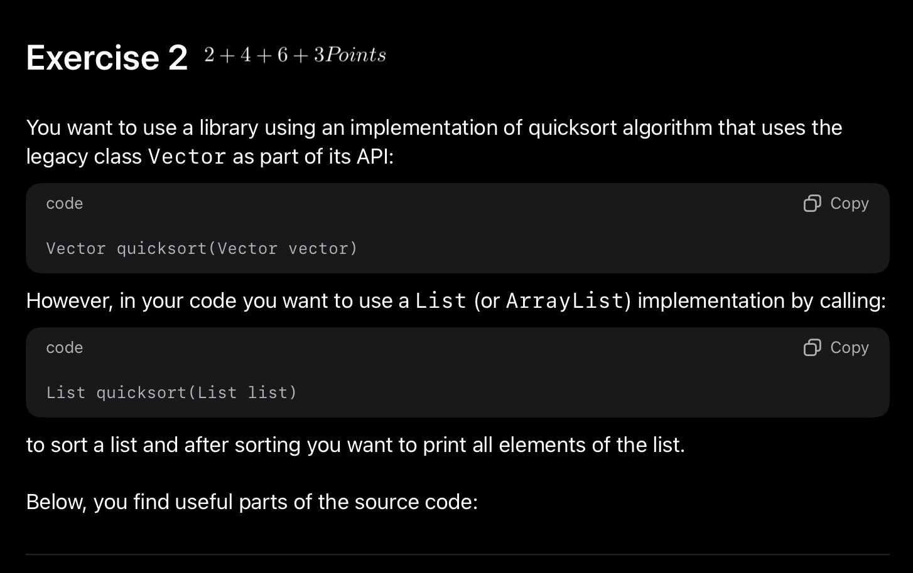
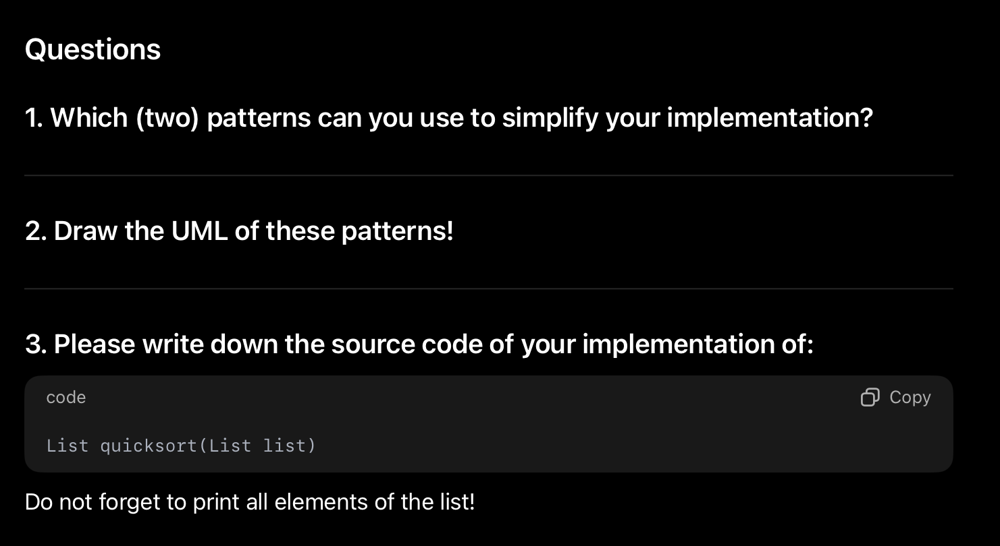
Exercise 2 Tasks & Complete Solution
Legacy API Provided on Exam Sheet:
Vector quicksort(Vector vector) // Legacy Vector has: Vector(Collection c), Enumeration elements() // Enumeration has: boolean hasMoreElements(), Object nextElement() // Iterator has: boolean hasNext(), Object next()
Solution (Part 1, 2, 3) Model Answers & Java Source Code
1. Which (two) patterns can you use to simplify your implementation? (2 Points)
- Adapter Pattern: To adapt the legacy
Vector/Enumerationinterfaces to the modernList/Iteratorinterfaces without modifying legacy code. - Iterator Pattern: To sequentially traverse and print the sorted elements uniformly without exposing internal data structures.
2. Draw the UML of these patterns! (4 Points)
^
|
EnumerationIteratorAdapter ----> <<interface>> Enumeration { +hasMoreElements(), +nextElement() }
3. Java Source Code Implementation of List quicksort(List list): (6 + 4 Points)
// 1. Adapter: Adapting Enumeration to Iterator
public class EnumerationIteratorAdapter implements Iterator<Object> {
private final Enumeration enumeration;
public EnumerationIteratorAdapter(Enumeration enumeration) {
this.enumeration = enumeration;
}
public boolean hasNext() {
return enumeration.hasMoreElements();
}
public Object next() {
return enumeration.nextElement();
}
}
// 2. Client Quicksort Implementation
public List quicksort(List list) {
if (list == null) return null;
// Adapt modern List into legacy Vector using Vector(Collection c)
Vector legacyVector = new Vector(list);
// Call the legacy sorting library
Vector sortedVector = LegacyLib.quicksort(legacyVector);
// Adapt sorted Vector back to modern List using EnumerationIteratorAdapter
List resultList = new ArrayList();
Enumeration en = sortedVector.elements();
Iterator it = new EnumerationIteratorAdapter(en);
while (it.hasNext()) {
resultList.add(it.next());
}
// Print all elements of the sorted list (as explicitly instructed!)
Iterator printIt = resultList.iterator();
System.out.print("Sorted Elements: ");
while (printIt.hasNext()) {
System.out.print(printIt.next() + " ");
}
System.out.println();
return resultList;
}
Exercise 3 · Strategy Pattern & Open-Closed Principle (OCP)
16 Points (8 + 4 + 4)Implement a flexible way to sort Collections using different algorithms (QuickSort, MergeSort) and analyze whether it (fully?!) adheres to OCP.
📷 Original Exam Sheet Scan · Exercise 3 (Pages 3, 4, 5) Click to inspect
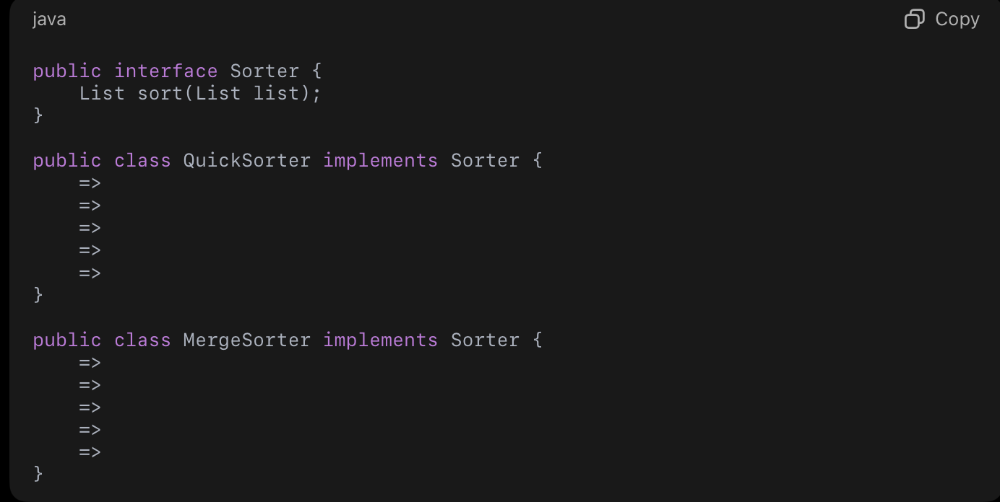
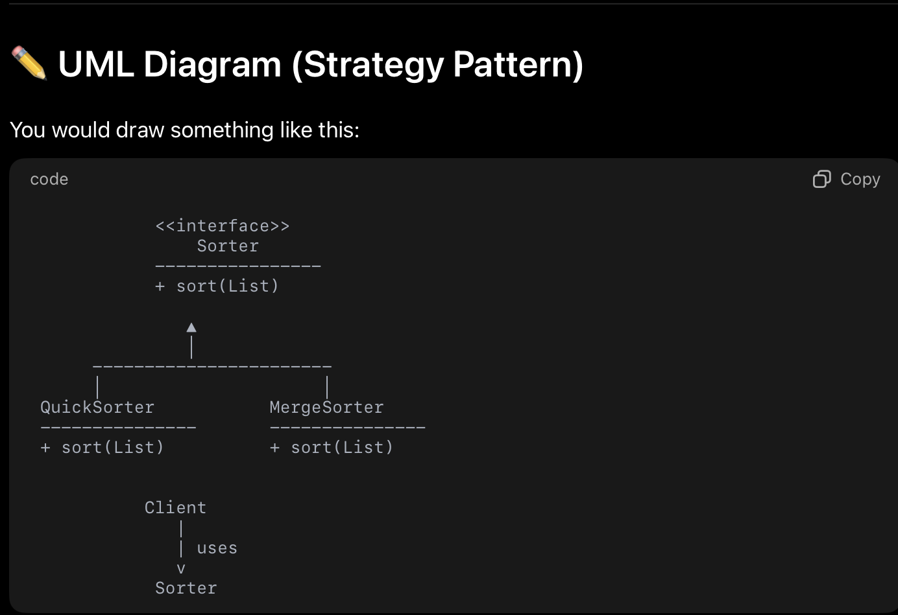
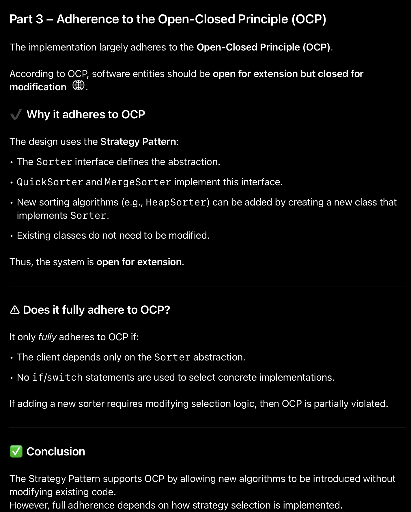
Exercise 3 Tasks & OCP Analysis
Official Solution & Rubric Model Code, UML & OCP Proof
1. Fill the gaps in the Java implementation: (8 Points)
public interface Sorter {
List sort(List list);
}
public class QuickSorter implements Sorter {
public List sort(List list) {
Vector v = new Vector(list);
Vector sorted = LegacyLib.quicksort(v);
// adapt back to List
return new ArrayList(sorted);
}
}
public class MergeSorter implements Sorter {
public List sort(List list) {
return MergeSortLib.mergesort(list);
}
}
2. Draw the UML diagram and identify the pattern: (4 Points)
Pattern Used: Strategy Pattern. Encapsulates sorting algorithms into interchangeable classes conforming to Sorter.
3. Does the pattern (fully?!) adhere to the OCP (Open Closed Principle)? (4 Points)
- Why it adheres to OCP: The system is open for extension because a new sorting algorithm (e.g.
HeapSorter,TimSorter) can be introduced simply by implementingSorterwithout modifying existing code. It is closed for modification because existing sorters remain untouched. - Does it FULLY adhere? NO, not unconditionally! Full adherence depends entirely on how the client selects and instantiates the concrete sorter:
- If the client or factory uses a hardcoded
switch(algoType)orif-elsechain, adding a new sorter requires modifying that selection logic, thereby violating OCP! - It only fully adheres if selection is decoupled via Dependency Injection, reflection, or a configuration registry.
- If the client or factory uses a hardcoded
Exercise 4 · Template Method Pattern Refactoring
14 Points (3 + 6 + 2 + 3)
Refactor a quicksort library supporting hardcoded < comparison to flexibly sort Student objects by age or name.
📷 Original Exam Sheet Scan · Exercise 4 (Pages 5 & 6) Click to inspect
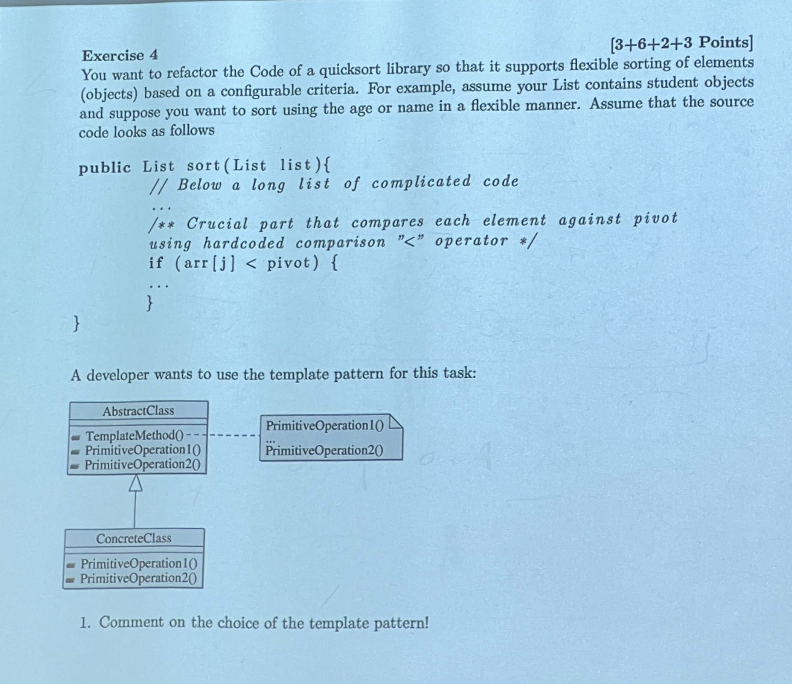
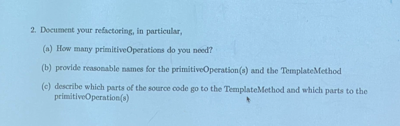
Exercise 4 Tasks & Architecture Refactoring
Official Solution & Rubric Model Commentary & Refactoring Plan
1. Comment on the choice of the Template Pattern: (3 Points)
The choice of Template Method is sub-optimal compared to the Strategy pattern.
- Template Method relies on class inheritance. To sort students by age, name, or GPA, one must create separate subclasses:
AgeQuickSorter,NameQuickSorter,GpaQuickSorter. - This causes subclass explosion and ties the sorting criteria statically to the class hierarchy at compile-time.
- In contrast, the Strategy pattern (like Java's
Comparator<Student>) achieves this dynamically at runtime via object composition without creating any subclasses of the sorter.
2. Document your Refactoring: (11 Points)
- (a) How many primitiveOperations do you need? (6 Points)
Exactly 1 primitiveOperation is needed: a comparison hook, e.g.boolean isLessThan(Object a, Object b)orint compare(Object a, Object b). - (b) Reasonable names for the methods: (2 Points)
• TemplateMethod:public final List sort(List list)(markedfinalto prevent overriding invariant skeletal flow).
• PrimitiveOperation:protected abstract boolean isLessThan(Object a, Object b). - (c) Which parts of the source code go where? (3 Points)
• TemplateMethod: Contains the entire invariant divide-and-conquer algorithm: partitioning logic, recursion, array indexing, and element swapping.
• PrimitiveOperation: Strictly contains the variant comparison statement replacingif (arr[j] < pivot)withif (isLessThan(arr[j], pivot)).
Exercise 5 · Composite Pattern & Arithmetic Expression Trees
14 Points (4 + 4 + 6)Identify composite structure for: $3 + 4 * (5 - 6 * 2 / (x + y))$, complete the UML diagram, and explain uniform recursive evaluation.
📷 Original Exam Sheet Scan · Exercise 5 (Page 7) Click to inspect
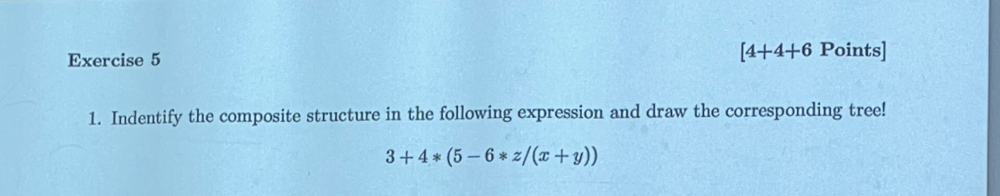
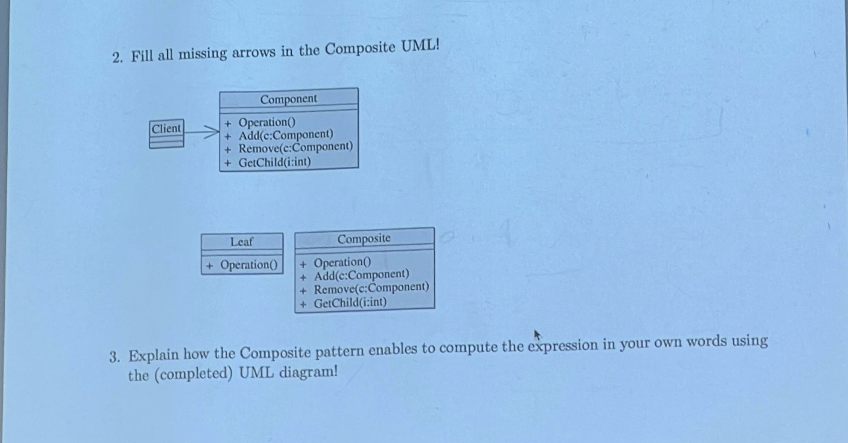
Exercise 5 Tasks & Tree Derivation
Official Solution & Rubric Expression Tree, UML & Execution
1. Expression Tree for $3 + 4 * (5 - 6 * 2 / (x + y))$: (4 Points)
/ \
(3) (*)
/ \
(4) (-)
/ \
(5) (/)
/ \
(*) (+)
/ \ / \
(6) (2)(x) (y)
2. Composite UML Arrows & Roles: (4 Points)
Leaf(NumericOperand, Variable) generalizes (inherits from)Component.Composite(BinaryOperator) generalizes (inherits from)Component.Compositehas a directed aggregation / composition reference pointing toComponentwith multiplicity1..*(orleft, right: Component).
3. How the Composite pattern computes the expression: (6 Points)
The Composite pattern enables uniform recursive evaluation via polymorphism:
- Clients invoke
root.evaluate()on the top-levelComponentwithout querying whether it is a leaf or a composite. - When
evaluate()is called on an operator (Composite), it recursively callsleft.evaluate()andright.evaluate(), applying its operator (e.g. $+$ or $*$) to the returned scalar values. - When
evaluate()reaches aLeaf, it immediately returns its literal number or looks up the variable's value. - Result: Zero conditional branches (no
if (node instanceof ...)) across the entire client codebase.
Exercise 6 · Singleton Implementation & SOLID Violations
12 Points (6 + 4 + 2)Fill gaps in thread-safe Singleton with reflection guard, analyze SOLID violations, and provide real-world applications.
📷 Original Exam Sheet Scan · Exercise 6 (Page 8) Click to inspect
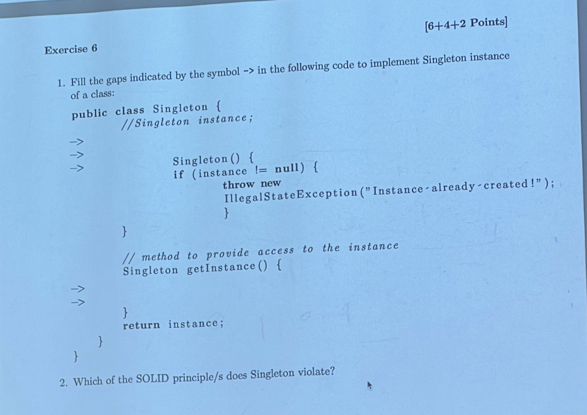
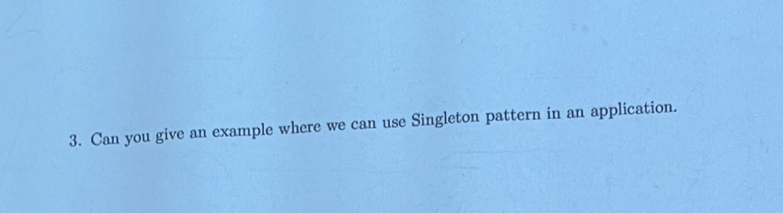
Exercise 6 Tasks & Architectural Evaluation
Official Solution & Rubric Model Java Code & SOLID Analysis
1. Java Code Implementation with Reflection Guard: (6 Points)
public class Singleton {
// 1. Static reference to hold the single instance
private static Singleton instance;
// 2. Private constructor with reflection defense
private Singleton() {
if (instance != null) {
throw new RuntimeException("Singleton instance already exists! Reflection forbidden.");
}
}
// 3. Thread-safe global accessor
public static synchronized Singleton getInstance() {
if (instance == null) {
instance = new Singleton();
}
return instance;
}
}
2. Which of the SOLID principle/s does Singleton violate? (4 Points)
- Single Responsibility Principle (SRP): The class has two responsibilities: (1) its domain business responsibility, and (2) managing its own global lifecycle and enforcing instance uniqueness.
- Dependency Inversion Principle (DIP): Clients call the concrete static
Singleton.getInstance()directly, tightly coupling caller code to a concrete class rather than an interface. This makes automated mocking and unit testing nearly impossible.
3. Valid Industrial Use Cases for Singleton: (2 Points)
- Configuration registry / properties manager for an application.
- Database connection pool or thread pool manager.
- Hardware logger or printer spooler manager.
Exercise 7 · Pattern Criticism & Functional Python Idioms
12 Points (4 + 8)Analyze Mark Dominus's critique and explain why Python first-class function quicksort eliminates the need for Strategy objects.
📷 Original Exam Sheet Scan · Exercise 7 (Pages 9 & 10) Click to inspect
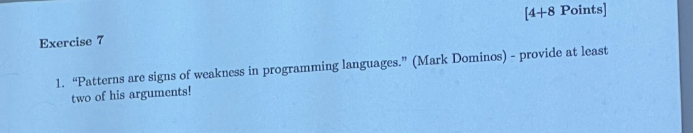
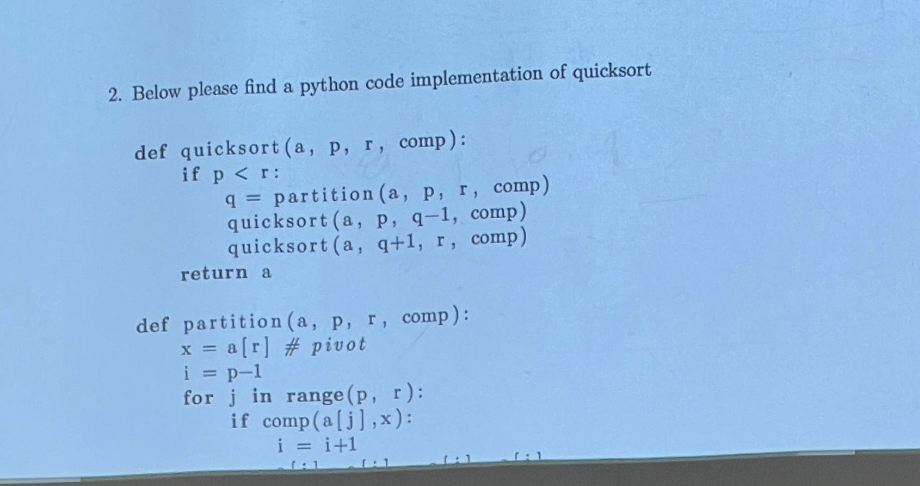
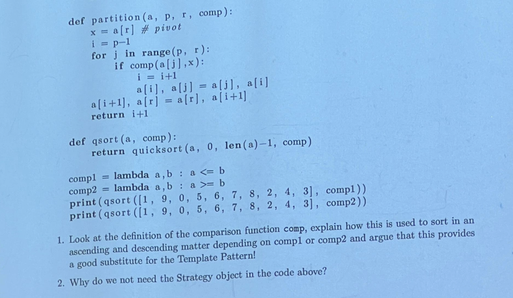
Exercise 7 Tasks & Functional Analysis
Official Solution & Rubric Model Arguments & Python Code Analysis
1. "Patterns are signs of weakness in programming languages" (Mark Dominus): (4 Points)
- Compensating for Missing Abstractions: Design patterns often arise as manual, boilerplate workarounds for limitations in static, early OOP languages (like C++ and Java 1.0) that lacked first-class functions, closures, dynamic dispatch, or macros.
- Patterns Evaporate into Syntax: When a programming language introduces modern features, the pattern ceases to be an architectural design structure and becomes basic language syntax (e.g. Strategy becomes a lambda argument, Iterator becomes
yield, Visitor becomes multi-methods).
2. Python Quicksort with First-Class Comparison Functions: (8 Points)
- Ascending vs Descending Order: Passing
comp1 = lambda a, b: a <= byields ascending order because the partition loop places smaller elements to the left. Passingcomp2 = lambda a, b: a >= binverts the partition comparison, producing descending order. - Substitute for Template Method: The skeletal quicksort flow (divide-and-conquer recursion) remains completely invariant in
quicksort(), while the comparison criteria is parameterized without any class inheritance or subclassing. - Why do we not need the Strategy object? In Python, functions are first-class citizens. They can be passed directly as arguments, stored in variables, and invoked anonymously. There is zero need to wrap algorithms inside boilerplate Strategy interfaces and concrete classes!
Exercise 8 · System Architecture: Banking Application
18 Points (9 + 9)Lead engineer architectural design: Account management (Savings, Current, Business), Payment gateway integration (PayPal, external banks), and real-time transaction notifications.
📷 Original Exam Sheet Scan · Exercise 8 (Page 11) Click to inspect
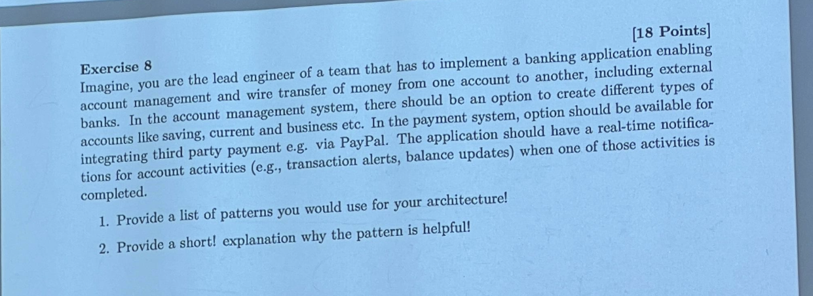
Exercise 8 Architecture Blueprint & Pattern Justifications
Official Solution & Rubric Architecture Patterns & Rationale
| Design Pattern | System Subsystem | Architectural Justification & Value |
|---|---|---|
| Factory Method / Abstract Factory | Account Management | Encapsulates creation of different account types (SavingsAccount, CurrentAccount, BusinessAccount) without coupling caller code to concrete classes, adhering to OCP. |
| Adapter Pattern | Payment Integration | Adapts incompatible third-party payment APIs (e.g., PayPal REST API, SWIFT wire transfer protocol) into a unified internal PaymentGateway interface. |
| Observer Pattern | Notification System | Decouples account operations from user alerts. When a transaction completes or balance changes, the Account notifies registered observers (SMS, Email, Push Alert service). |
| Command Pattern | Wire Transfer Engine | Encapsulates each transaction as a discrete command object (TransferCommand), enabling transaction queues, audit logging, retry handling, and compensating rollbacks (undo). |
| Strategy Pattern | Fee & Interest Engine | Allows interchangeable, runtime-configurable fee calculation and interest rate policies without modifying core Account entities. |
| Decorator Pattern | Account Enhancements | Dynamically attaches optional features to accounts (e.g. overdraft protection, premium insurance, foreign currency wallets) without subclass explosion. |
📊 Self-Grading Rubric & Official Evaluation (107 Pts Total)
Based on Prof. Dr. Jörg Schäfer's Frankfurt UAS Masterclass grading scale.
95 – 107 Points (1.0 – 1.3)
SEHR GUT / OUTSTANDINGFlawless Adapter/Iterator implementation, thorough OCP evaluation, complete expression tree, and robust banking architecture.
80 – 94 Points (1.7 – 2.3)
GUT / SOLID PASSStrong design pattern identification with minor omissions in reflection prevention or OCP switch nuance.
55 – 79 Points (2.7 – 3.7)
BEFRIEDIGEND / PASSUnderstood basic pattern mechanisms but lost points on missing print loop in Ex 2 or incomplete expression tree.
< 55 Points (5.0)
NICHT BESTANDENFailed to meet minimum requirements. Retake recommended after reviewing course units.
Proceed to Mock 2 · Course Notes Exam Vault
Includes all ~17 oral and analytical exam questions extracted from Prof. Schäfer's notes (POS-exams-notes.pdf): JUnit Cook's Tour, Rice's theorem on LSP, Blackboard architecture, and Package Main Sequence ($I, A, D$) metrics.